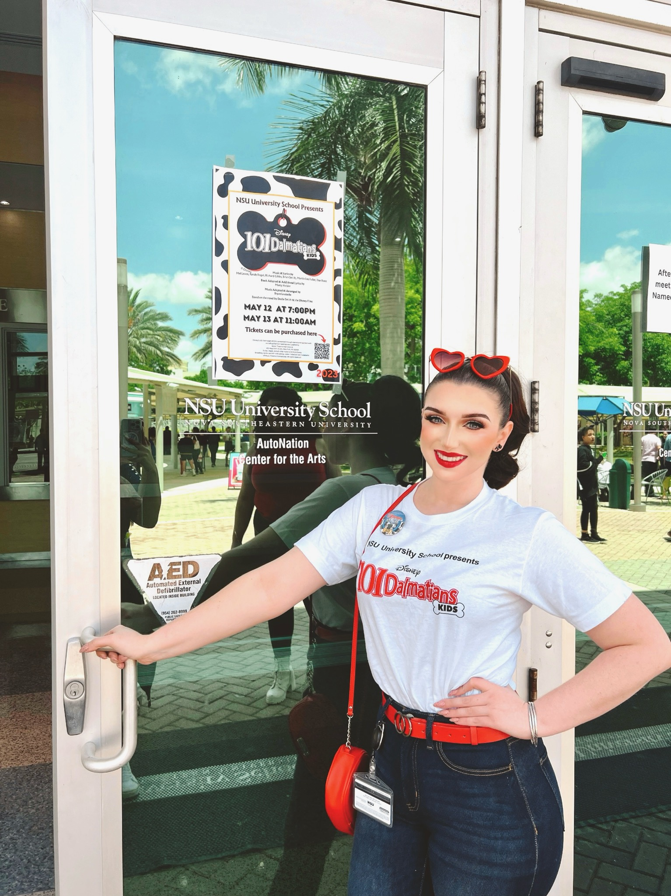

Creative Operations | Audience Engagement | Events Professional
Connecting Communities Through Storytelling & Live Experiences
Hello, and welcome!
I'm Lesly, a creative professional, educator, and storyteller with a passion for bringing people together through the arts. For more than a decade, I've worked across theatre, education, entertainment, marketing, and live events, creating experiences that inspire curiosity, foster connection, and celebrate creativity.
Throughout my career, I've had the opportunity to wear many hats—educator, director, performer, designer, marketer, mentor, and event professional. Whether I'm teaching university students, directing a production, supporting a creative business, or engaging audiences at live events, I am most fulfilled when helping people discover the power of storytelling and shared experiences.
As a Theatre Studies educator at Nova Southeastern University, I guide students through performance, production, and critical analysis while encouraging collaboration, confidence, and creative growth. Beyond the classroom, I work with local South Florida artist LenLenCreates, supporting the promotion of original musical theatre-inspired artwork through marketing, audience engagement, visual merchandising, and live-event experiences at conventions and markets across the country.
My theatre background includes directing sold-out productions, developing original theatrical works, costume and make-up design, performance, arts education, and production management. These experiences have shaped my belief that great creative work happens when people feel welcomed, valued, and empowered to contribute their unique perspectives.
At the heart of everything I do is a love of people. I believe the arts create opportunities for connection, learning, and community, and I am passionate about creating spaces where artists, students, audiences, and collaborators feel seen, supported, and inspired.
Whether you're here to explore my work, discuss a creative project, learn more about my experience, or simply say hello, I'm glad you're here. I am always excited to connect with fellow creatives, educators, organizations, and storytellers who share a passion for making meaningful experiences.
Let's create something memorable together.

Hello, and welcome!
I'm Lesly, a creative professional, educator, and storyteller with a passion for bringing people together through the arts. For more than a decade, I've worked across theatre, education, entertainment, marketing, and live events, creating experiences that inspire curiosity, foster connection, and celebrate creativity.
Throughout my career, I've had the opportunity to wear many hats—educator, director, performer, designer, marketer, mentor, and event professional. Whether I'm teaching university students, directing a production, supporting a creative business, or engaging audiences at live events, I am most fulfilled when helping people discover the power of storytelling and shared experiences.
As a Theatre Studies educator at Nova Southeastern University, I guide students through performance, production, and critical analysis while encouraging collaboration, confidence, and creative growth. Beyond the classroom, I work with local South Florida artist LenLenCreates, supporting the promotion of original musical theatre-inspired artwork through marketing, audience engagement, visual merchandising, and live-event experiences at conventions and markets across the country.
My theatre background includes directing sold-out productions, developing original theatrical works, costume and make-up design, performance, arts education, and production management. These experiences have shaped my belief that great creative work happens when people feel welcomed, valued, and empowered to contribute their unique perspectives.
At the heart of everything I do is a love of people. I believe the arts create opportunities for connection, learning, and community, and I am passionate about creating spaces where artists, students, audiences, and collaborators feel seen, supported, and inspired.
Whether you're here to explore my work, discuss a creative project, learn more about my experience, or simply say hello, I'm glad you're here. I am always excited to connect with fellow creatives, educators, organizations, and storytellers who share a passion for making meaningful experiences.
Let's create something memorable together.